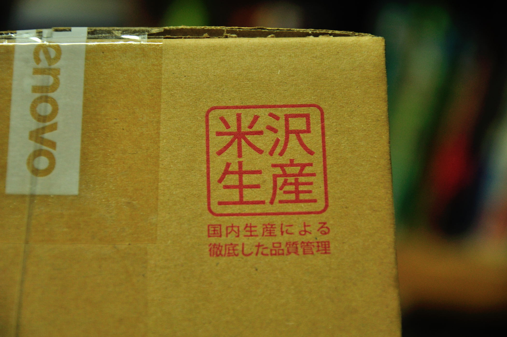
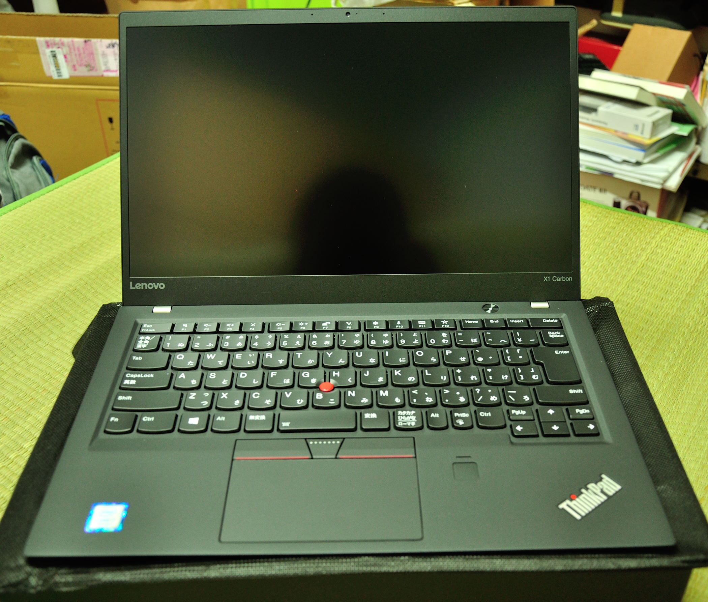

從工作到現在，過去用過的、加上現在正在使用中的筆電共有四款，其中二款是中國製的、二款是日本製的。和中國製的比較起來，日本製的產品確實是比較耐用；其中有一台已經用了近 10 年，除了風扇因老化而自行替換外，就沒再出現過其他問題。當然也有人說日本製的也是會買到機王，不過至少我目前還沒遇到過，因此我對於日本製的筆電一直有很好的印象，而這也反映在我挑選筆電的考量要素中。在買筆電前，我都會先去找找看有沒有日本製的型號，再來才是看價格。然而在台灣還有在賣日本製筆電的品牌寥寥可數，且價格高不可攀，令人望之卻步。
由於目前工作用的機器是 ThinkPad T450，雖然是中國製的，不過使用起來感覺還算不錯，鍵盤好打，也算是容易安裝 Linux 系統，因此當女友想換新筆電的時候，我第一個想到的就是 ThinkPad。有一天在偶然的情況下逛到了 Lenovo JP 的官網，赫然發現竟然有出所謂「米沢生產」的
ThinkPad X1 Carbon，而且在折扣時段的價錢竟然比在台灣買還要便宜了約台幣 1 萬元，當下和女友討論後就決定找代購來下訂了。


之前一直以為 Lenovo 的筆電都是在中國生產，不過查了資料後發現 Lenovo 在 2015 年就開始在日本小批量生產部分的高階機型，x1c
就是其中之一。拿到貨後，可以在外包裝箱上看到印著「米沢生產」的字樣。這裡的「米沢」指的是 NEC 在山形縣的米澤工廠
(影片介紹)，同時這裡也是
LaVie 系列筆電的生產地。也許有人會覺得，啊料不都是一樣嗎，由誰來組裝有什麼差別？我個人以為差別可能就是差在 QA
這一塊，把關的比較嚴謹，抽到機王的機率也會比較低吧…
至於這台中國品牌、日本製造的筆電，是否也和日本品牌、日本製造的一樣耐操，就讓時間來解答吧。